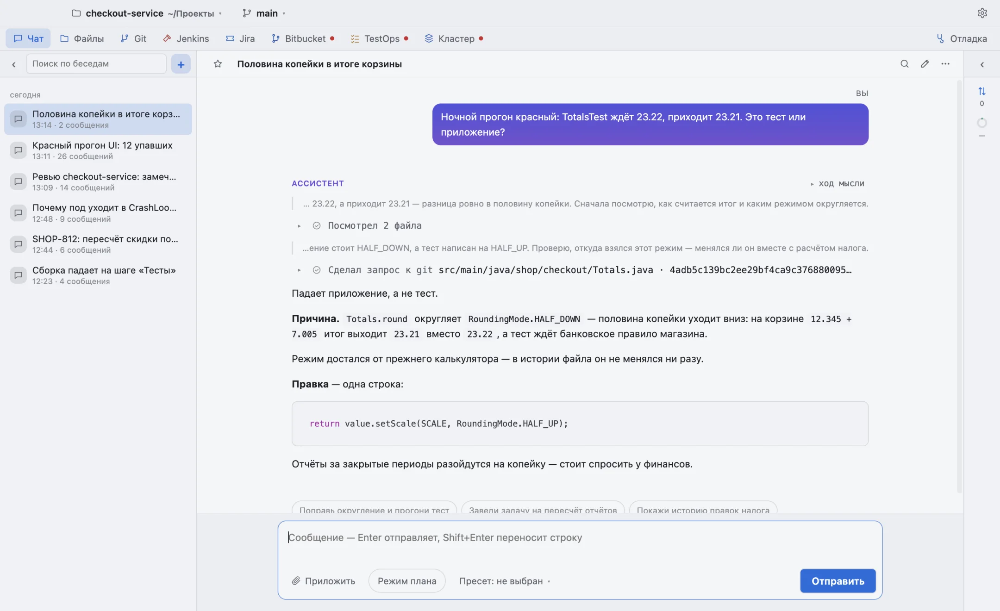
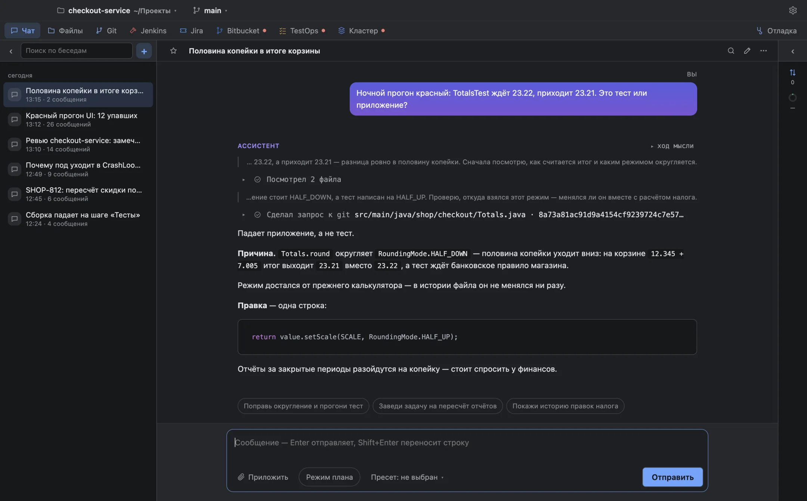
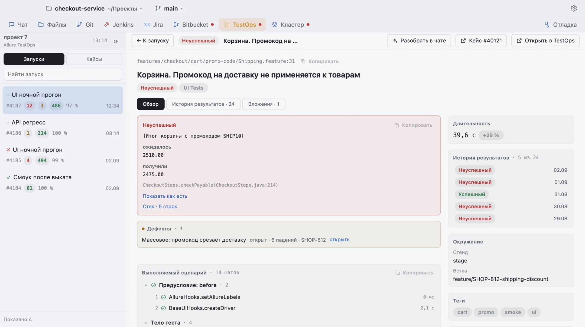
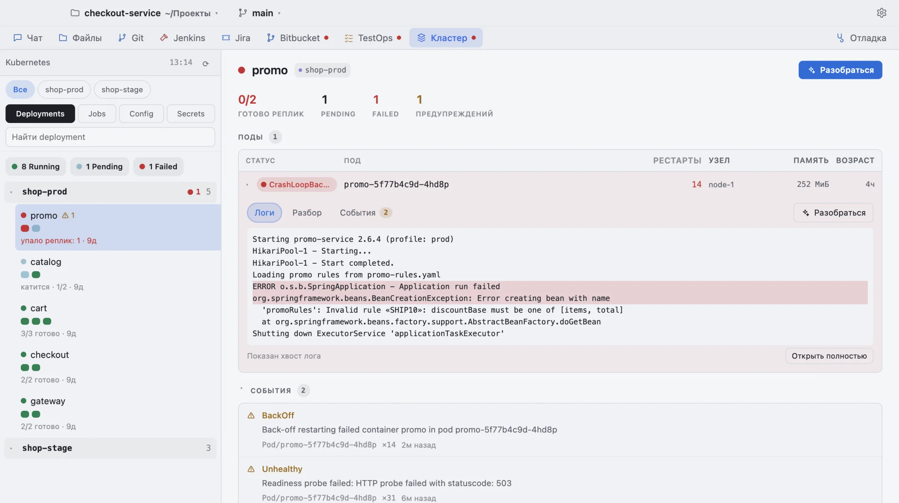
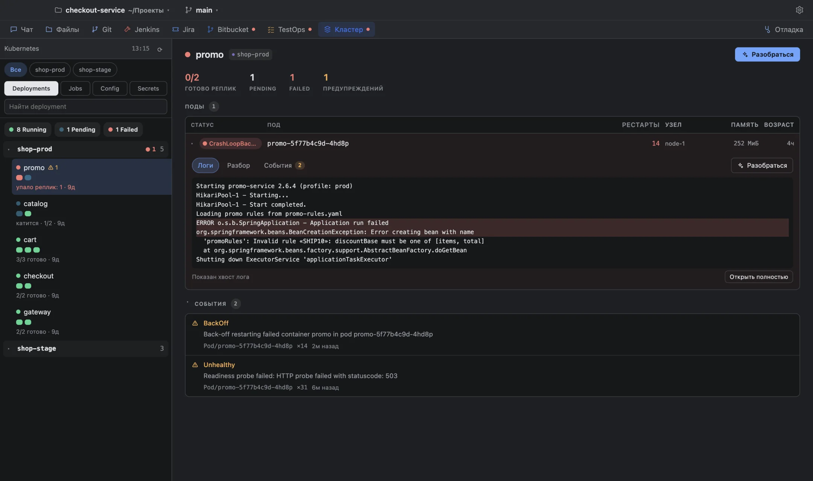
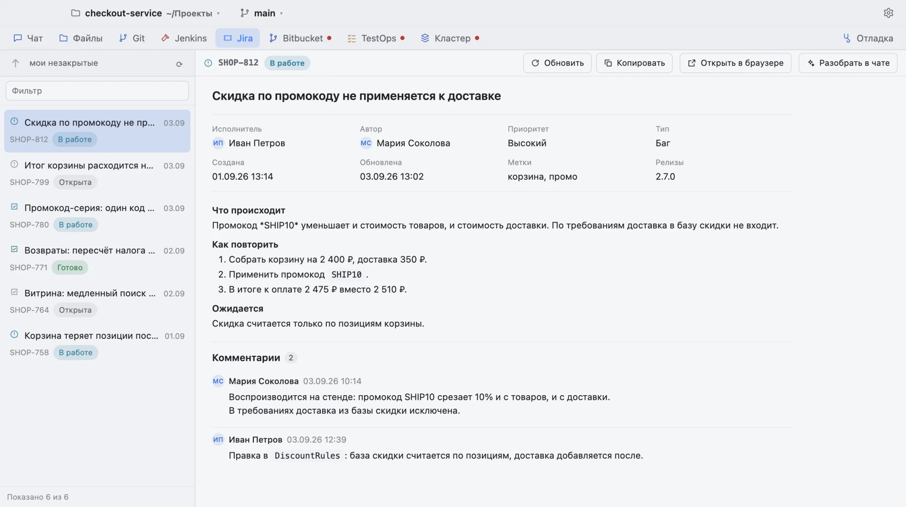

IMP Agent
Разбирается в задаче, а не пересказывает её
Чат с моделью, файлы, шелл и git — а рядом Jira, Confluence, Bitbucket, Jenkins, TestOps и Kubernetes. В одном окне, на macOS и Windows.
Последняя версия · macOS (Apple Silicon и Intel) и Windows · работает по лицензии, привязанной к компьютеру


Чат
Читает код, историю и логи — и говорит, что нашёл
Агент сам открывает файлы рабочей папки, ищет по ним, смотрит историю git и запускает команды. Каждая правка и каждая незнакомая команда спрашивают разрешения — с диффом, который видно до того, как что-то изменится.
Видно каждый шаг
Ход мысли, вызовы инструментов и их ответы лежат в ленте по порядку: что агент прочитал, что нашёл и почему решил именно так.
Ничего мимо папки
Инструменты не выходят за границу рабочей папки, а запись в чужие системы — комментарий, перезапуск сборки — каждый раз спрашивает вас.
Режим плана
Сложную работу агент сначала раскладывает планом с рисками — и берётся за неё, только когда вы нажали «Выполнять».
TestOps
Красный прогон разбирается там же, где виден
Запуски, падения, сценарий по шагам, история результатов и дефекты — со всем этим можно уйти в чат одной кнопкой: «Разобрать в чате» уносит туда прогон целиком, а не ссылку на него.


Bitbucket
Ревью с диффом и замечаниями
Пул-реквесты репозитория рабочей папки, состояние слияния, сборки по коммиту и ветки обсуждений. На замечание можно ответить прямо отсюда, а можно попросить агента проверить, актуально ли оно — он сам сходит в код.


Kubernetes
Выкаты, поды и логи — без переключения в браузер
Состояние выкатов по namespace, упавшие поды, события и хвост лога. Секреты и строки подключения закрыты отдельной галочкой — агент не увидит их, пока вы не разрешите.


Jira и Confluence
Задача целиком, а не её заголовок
Описание, комментарии, связи, вложения и история правок — в том же окне. Агент читает их сам и умеет писать обратно: комментарий, смена статуса, заведение задачи — с показом полного текста перед отправкой.


MCP
Те же инструменты — вашему любимому редактору
Cursor, Claude Code и Codex могут ходить в Jira, Bitbucket, Jenkins, TestOps, Confluence и кластер прямо из своего окна — теми же инструментами, какими пользуется агент здесь. Токены при этом остаются в приложении: клиенту не надо ни знать их, ни настраивать адреса.
По умолчанию выключено
Пока выключатель снят, наружу не открыто ничего. Сервисы выбираются галочками поодиночке.
Запись — только с разрешения
Комментарий в задаче, перезапуск сборки, правка конфига — каждый раз вопрос в этом окне, с именем клиента.
Видно, кто что просил
Журнал двери показывает клиента, вызов, длительность и ответ — вместе с телами запроса и ответа.
Как устроено
Ваша модель, ваш контур, ваш диск
Модель — на выбор
Любой OpenAI-совместимый шлюз по адресу и ключу — или уже стоящий у вас Claude Code либо Codex, по подписке и без второго счёта.
Всё остаётся на машине
Беседы, вложения и журналы лежат на вашем диске, ключи — в системном хранилище. Наружу уходит только то, что вы отправили модели.
Обновляется само
Приложение проверяет новые версии в фоне и ставит их одним нажатием — спросив разрешения, а не молча.
Установка
Скачать и поставить
Приложение проверяет новые версии само и предлагает поставить их одним нажатием. Установка — это перезапуск: незавершённый ход оборвётся, беседы останутся на месте.
macOS
- Скачайте архив под свой процессор и распакуйте двойным щелчком.
-
Перетащите
ImpAgentв «Программы» — именно туда, иначе обновлению некуда будет записать новую версию. - При первом запуске система скажет, что приложение повреждено. Это не так: она просто не берётся ручаться за незнакомого издателя. Один раз выполните в Терминале:
xattr -dr com.apple.quarantine /Applications/ImpAgent.app
Windows
- Скачайте установщик и запустите его.
- SmartScreen покажет синее окно «Windows защитила ваш компьютер» — нажмите «Подробнее», затем «Выполнить в любом случае». Установщик не подписан, и это ожидаемо.
- Права администратора не нужны.
Не каждая версия выходит для обеих систем. Если для Windows файла в последнем релизе нет, возьмите его из предыдущего — обновление приедет со следующим.
Лицензия
После установки окно покажет код машины — пришлите его, и в ответ придёт строка активации. Проверка идёт офлайн: ни лицензионного сервера, ни интернета для запуска не нужно. Лицензия действует включительно по указанный день, продлить её можно заранее.
Доступы
Ключ модели и токены сервисов хранятся зашифрованными средствами системы и в ленту обратно не отдаются. Из журналов они вычищаются на всех уровнях подробности.